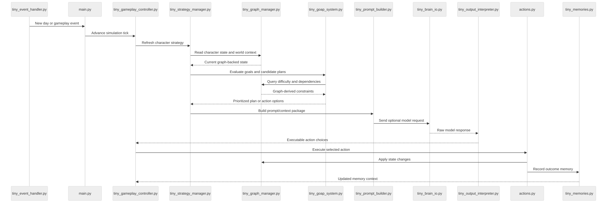
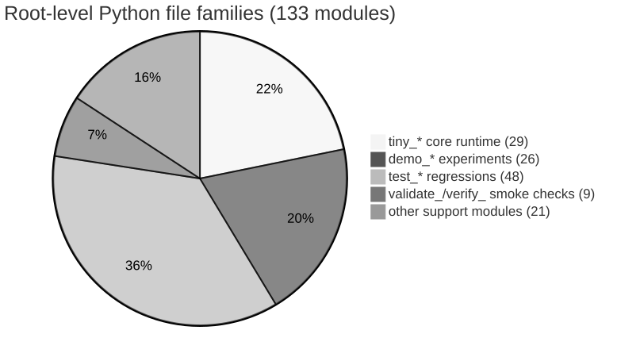
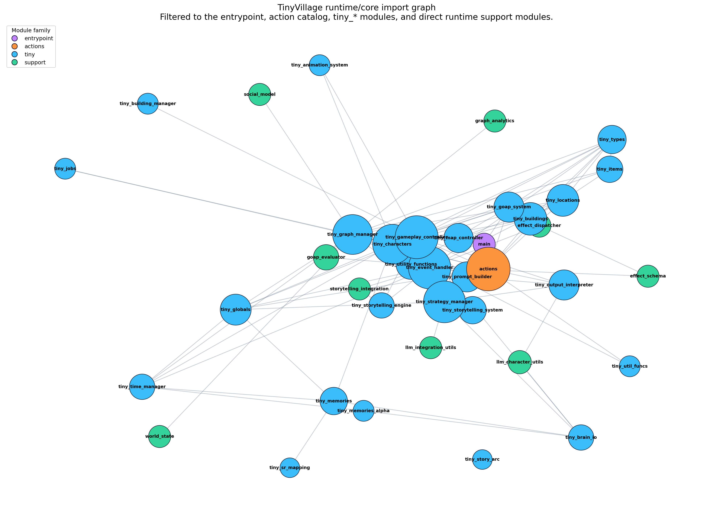

TinyVillage Repo Visualization Bundle
Generated on 2026-04-17 03:49:05 UTC from docs plus static import analysis. This bundle is architecture-first: it highlights the decision loop, the runtime topology, and the flat root-level module landscape.
Key insights
- `actions.py` is the strongest inbound dependency hub across the root-level Python modules.
- `tiny_event_handler.py`, `tiny_strategy_manager.py`, and `tiny_gameplay_controller.py` form the clearest event-to-plan orchestration spine in the runtime slice.
- The repository root is unusually flat: tests and demos outnumber the core `tiny_*` modules, which makes topology views more useful than a plain file tree.
Markdown mindmaps
- README.md
Project framing, run modes, and the high-level runtime surface.
- AGENTS.md
Contributor-oriented map of the root layout, core systems, and working agreements.
- design_docs/high_level_architecture.md
Conceptual component map showing how orchestration, planning, graph state, memory, and map control fit together.
- design_docs/data_flow_decision_cycle.md
Detailed event-to-decision-to-action sequence for a character's daily behavior loop.
- docs/README.md
Documentation taxonomy showing how guides, reference material, analysis, and archived docs are organized.
Mermaid diagrams
runtime-topology
The runtime is organized around an orchestration spine: entrypoint to gameplay controller to event handling to strategy to actions and graph state, with the optional LLM path hanging off strategy selection.
{kind=link}

decision-cycle-sequence
The character decision loop is event-triggered and only reaches memory updates after state changes, which keeps planning, execution, and recollection as distinct phases.
{kind=link}

repo-shape
The root directory is dominated by tests and demos around a smaller `tiny_*` runtime core, which explains why topology diagrams are more revealing than a simple tree listing.
{kind=link}

artifact-map
The repo's docs and validation artifacts mirror the runtime subsystems closely, so the most useful visual bundle needs both documentation-derived and code-derived views.
{kind=link}

Data-derived graph views
Runtime import graph
Filtered to the entrypoint, action catalog, tiny_* modules, and direct runtime support modules so the rendered graph stays readable.
{kind=link}

Machine-readable exports
Use the CSV, JSON, and GraphML artifacts for deeper analysis or to import the graph into other tools.